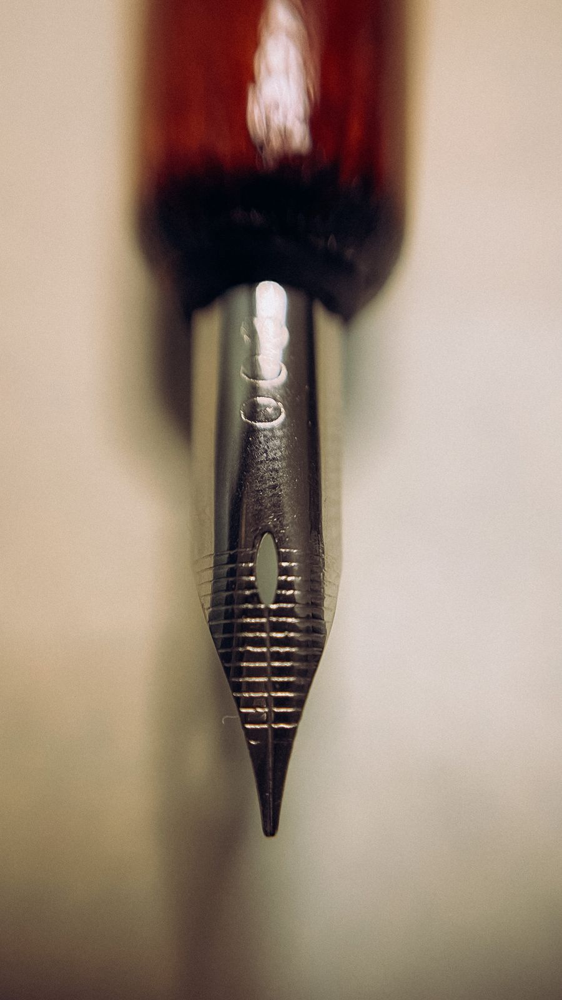

The Wren Bench — bespoke fountain pens, ground and tuned by hand, Birmingham
From the commission book
Three pens, told the way they happened.
A flagship, a resurrection, and a return. The book keeps all three kinds of entry, and this page does the same — successes and failures get the same length here.
Case file 1 · Bespoke commission № 197
The novelist's pen
Client: Helen Armitage, novelist, Leeds · Body: ebonite, full size, 24 g capped · Nib: 18k gold, fine grind, oblique foot · Entered: February 2026 · Delivered: June 2026
The brief
Three thousand words a day, longhand, in a small close hand — drafts first, fair copy later, chapter headings written large when a chapter turns. The ask was a pen that could live at both sizes: fine enough for the margins of a manuscript page, willing to shade when the writing speeds up. Her page of ordinary writing showed the rest: a low hold at about thirty degrees, firm pressure, and a slight roll of the pen in the hand that she was not aware of until it was measured.
The decisions
The grind is a fine — light line 0.25 mm, full line 0.45 mm on Table T1 — ground on 18k gold, the softer alloy, because her pressure is firm and honest and a stiffer nib would have fought her by the second hour of a session. The low hold asked for an oblique foot, so the whole edge meets the page at thirty degrees instead of one corner of it. The roll was ground in from the start: the sweet spot is centred where her hand actually puts the nib, which is a few degrees off where a careful sample would have put it. The body is full-size ebonite, warm in the hand and light for its size, because a pen written with for six hours is furniture, not jewellery.
Plate 1 — the delivered line of № 197 at her firm hand, drawn at four times life size: 0.25 mm at rest, swelling to 0.44 mm where the sentence leans. From the pen's own sample sheet, which leaves with the pen.
The outcome
Delivered in June 2026, inside the printed week. She has written two drafts with it since. One tuning round was used — not for the nib, which was right, but for the feed: she writes faster than the first setting liked, and the flow was opened a fraction. That is the adjustment policy working as printed, on the bench page.
“It writes the way I think in sentences — fine enough for the margins, and when a chapter turns, I press, and the line turns with me. I have stopped keeping a second pen.”
Helen Armitage, on № 197.
Case file 2 · Vintage nib fitting № 209
The 1913 nib
Client: a collector, Edinburgh · The nib: 14k gold flex, American, c. 1913 — its maker's work, imprint kept · The bench's work: hand-cut ebonite feed, new ebonite body, seating and tune · Delivered: September 2026
Reference photograph (Pexels, by Sebastian Luna): holders and nibs of the period the bench sources from. Shown for the period, not as bench property — the 1913 nib itself is photographed in its case file papers, which belong to its owner.
The brief
Fit a loose vintage nib — bought years earlier at a pen show and kept in a drawer since — into a new pen that could be written with daily. The nib is a flexible 14k point from an American maker of the early twentieth century; the imprint is legible, the tipping is sound, and the flex is the kind modern production mostly declines to attempt.
The decisions, and the credit
The credit first, because it governs everything else: the nib is its maker's work. A craftsman dead for a century ground that point; the bench's work is everything around it, and the case papers say so in those words. What the bench made: a feed cut by hand from ebonite, channelled deeper than a modern feed, because a nib that flexes this wide drinks ink in gulps and a standard feed starves it at the bottom of a long stroke; a body turned from ebonite to the proportions of the nib's own period; and the seating — the nib set at the depth where its slit and the feed's channel agree. The owner supplied the nib himself, bought at a pen show years before; his receipt travels with the case papers, so the nib's provenance is a document, not a story.
Plate 2 — the 1913 nib's line, drawn at four times life size: a 0.15 mm hairline opening to a 1.30 mm shade. No modern grind on Table T1 is asked to do this; that is the point of fitting old nibs, and the reason the feed is cut by hand.
The outcome
Delivered September 2026. The owner writes letters with it — the use it was made for, resumed after a century in drawers. If the nib ever needs work beyond a tune, the papers say where its loyalties lie: the bench will seat and feed it for as long as it practices, and will not regrind the point. Some things are only borrowed from their makers.
Case file 3 · Bespoke commission № 188
The pen that came back
Client: a lecturer, Oxford · Body: ebonite · Nib: 14k gold, medium grind · Delivered: March 2026 · Returned under the adjustment policy: week 6 · Re-delivered: May 2026

Reference photograph (Pexels, by Kristina Ohrband): a pointed steel nib, macro — steel, and captioned as steel. № 188's nib is gold; the photograph stands here for the closeness of the looking, not the metal.
The brief, and the miss
A medium grind for a lecturer who writes fast — lecture notes, annotations, letters. The hand analysis was done properly by the bench's own rules of the time: a page of writing, sent by post, measured for angle, pressure and speed. The pen was ground for a forty-five degree hold and delivered. Six weeks later it came back with a courteous, precise letter: scratchy on the upstroke, and on fast curves the line simply stopped and started again.
The fault was the bench's, and it was in the evidence all along. The owner writes his careful page at forty-five degrees — and his real writing at sixty, with the pen rolled twenty degrees in the hand, because that is how he writes when he is thinking about something else. The sample had been a performance. Tuned to the performance, the nib's sweet spot sat where his hand never goes; at speed, one tine lifted, and the line broke.
Plate 3a — the line as first delivered, at his real writing speed: the break in the middle is the tine lifting. Drawn at four times life size.Plate 3b — the same stroke after the re-tune: the roll ground in, the sweet spot widened, the line unbroken.
The remedy, and the lesson kept
The adjustment policy — a free re-tune within three months, printed before any deposit is taken — covered the work in full; the owner paid the postage and nothing else. He sent a phone video of his ordinary writing, which showed in ten seconds what the posted page had hidden. The nib was re-ground with the roll in it and its sweet spot widened, and it is now, by his account, the pen he reaches for.
The bench changed its intake because of this pen, and the change is printed wherever the book is described: the analysis now asks for a page of ordinary writing — a shopping list, a diary entry, anything unposed — and treats a careful sample as evidence of how a client writes for an audience. Thirty-one pens have been re-tuned free under the policy. This is the only one that changed how the bench works, and it is printed here at the same length as the successes.
Your entrythe book is open
The book stands at 25 names. Run the planner on the line page to see where your pen would fall, then write to the bench — with a page of ordinary writing ready to photograph.